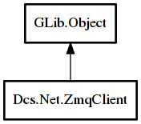

ZmqClient
Object Hierarchy:

Description:
public abstract class ZmqClient : Object
Content:
Properties:
- public int port { construct set; get; }
Port number to connect to.
- public ZmqTransport transport { construct set; get; }
Transport to connect over.
- public string address { construct set; get; }
Address to use with the service.
- public bool is_connected { get; }
Whether or not the client is connected to a server.
- public string? filter { set; get; }
An optional filter to use to limit what's being received.
Creation methods:
Methods:
- protected void zmq_init () throws ZmqError
- public abstract void run ()
- protected abstract async void watch () throws ThreadError
Signals:
Fields:
Inherited Members:
All known members inherited from class GLib.Object
- @new
- newv
- new_valist
- get_type
- get_class
- @ref
- unref
- ref_sink
- weak_ref
- weak_unref
- add_weak_pointer
- remove_weak_pointer
- @get
- @set
- get_property
- set_property
- get_data
- set_data
- set_data_full
- steal_data
- get_qdata
- set_qdata
- set_qdata_full
- steal_qdata
- freeze_notify
- thaw_notify
- dispose
- constructed
- notify_property
- connect
- disconnect
- add_toggle_ref
- remove_toggle_ref
- bind_property
- notify
- ref_count